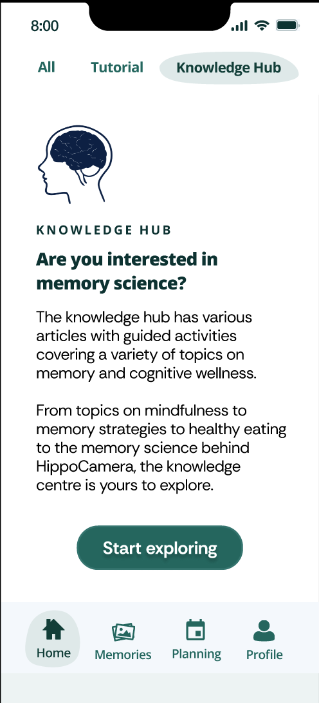

A digital educational program to improve memory for older adults
Lei, D., Hong, B., Hughes, E. C., & Barense, M. D. (2025) presentation
Recent data from geriatric research centres around the world show that older adults are keen to use technological tools to improve their well-being, especially in the context of cognitive aging. Among the various tools that have been readily accepted by older adults is HippoCamera — a mobile application designed to enhance memory for everyday events. This smartphone application has drawn great interest from the older adult community with many users suggesting to add some content explaining the science behind the app's effectiveness as a memory tool. Here, we set out to develop an educational program to complement HippoCamera with a specific focus on the different memory strategies established in the memory science literature. Prospective users of this educational program would engage with a series of "modules" that each address an important topic in healthy aging such as changes in cognition. To ensure that we are developing a tool that takes into account for the perspectives of older adults, we used the person-based approach. To this end, we interviewed older adults from the Greater Toronto Area to obtain feedback on an early version of an educational program (“Knowledge Hub”) being developed within HippoCamera. Stuctured interviews and qualitative analyses revealed key barriers and facilitators that drive an older adult's engagement with technological healthcare tools. Major barriers included prescriptive language and the inclusion of a mascot whereas facilitators included personal relevance and cognitive scaffolding. Importantly, this study highlights the factors that shape older adults’ acceptance of technologically-based tools, informing the optimization of future interventions.